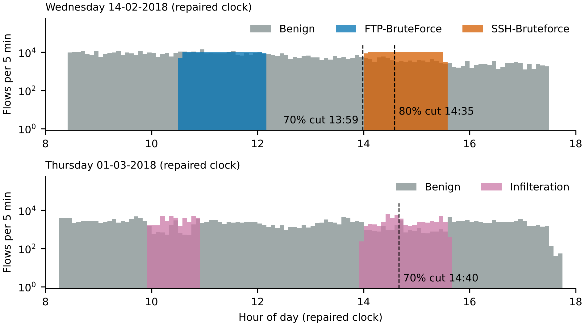
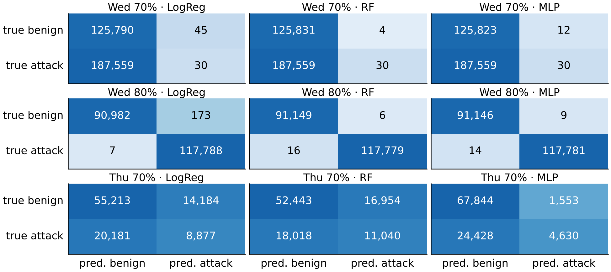
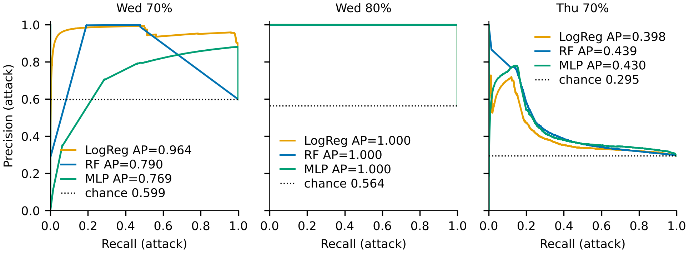
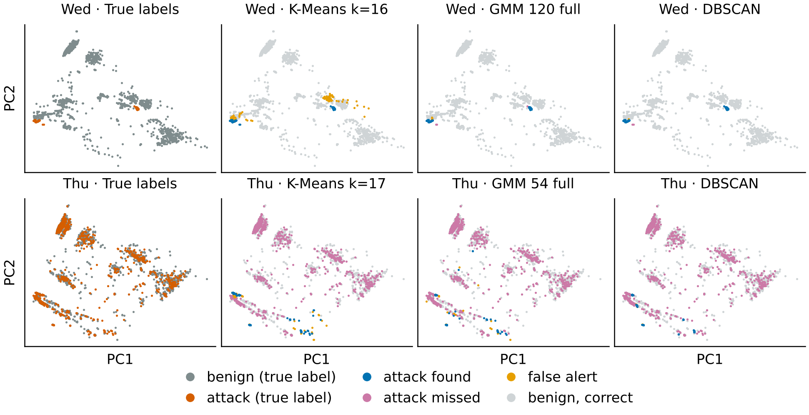
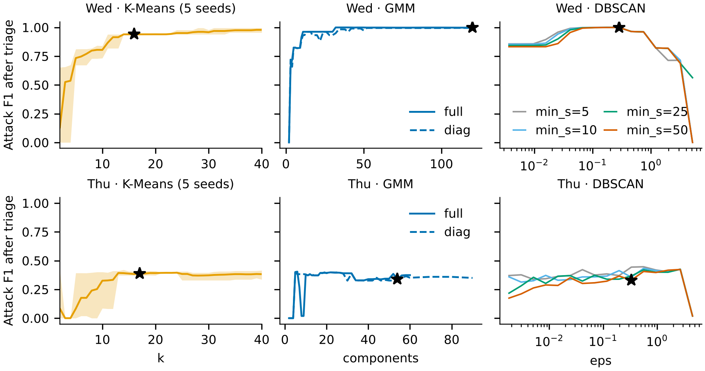

| Name | Student ID |
|---|---|
| Ahmed Alnuaimi | M80009405 |
| Mansour Alkaabi | M80009410 |
| Ahmed Almansoori | M80009548 |
Two SOC problems on CSE-CIC-IDS2018 [1], on Wednesday brute force (FTP, SSH) and Thursday infiltration: which classifier to deploy (Task 1), and whether attacks can be found without labels (Task 2). All splits are time-ordered on a repaired clock.
Both days were cleaned in the same order: repeated header lines, rows dated 1970 and rows holding ±Infinity were removed, then constant columns were dropped (Table 1). NaNs occurred only in rows that also held Infinity (2,277 and 1,834 rows). Duplicate flows were counted and kept: identical flows are legitimate repeated traffic. Timestamp and Dst Port were dropped as features (time reveals the attack window; ports 21 and 22 almost define the Wednesday labels); Protocol was kept. The label is binary. Thursday has no 1970 rows.
Data cleaning and class balance per day. Rows removed add up exactly to rows in file minus rows kept.
| Step | Wednesday 14-02-2018 | Thursday 01-03-2018 |
|---|---|---|
| Rows in file | 1,048,575 | 331,125 |
| Removed: repeated header lines / rows dated 1970 / rows with ±Infinity | 0 / 5 / 3,824 | 25 / 0 / 2,919 |
| Rows kept | 1,044,746 | 328,181 |
| Constant columns dropped / features used | 10 / 67 | 8 / 69 |
| Duplicate rows (counted, kept) | 373,613 | 40,154 |
| Attack flows (share of rows kept) | 193,354 FTP + 187,589 SSH (36.5%) | 92,403 Infiltration (28.2%) |
The raw hour histogram holds traffic in hours 01–05 and 08–12 and none in hours 06–07, which fits a 12-hour clock written without AM/PM (the afternoon is stored as 01–05). SSH brute force appears at raw 02:01–03:32 and becomes 14:01–15:32 after adding 12 hours. The repair moved 377,414 Wednesday and 163,781 Thursday flows and leaves one daytime window per day (9.0 h and 9.5 h). The evidence is data-internal only: the UNB schedule page could not be fetched, so the published schedule is not verified, and file order is not chronological (289,263 backward steps on Wednesday).
The first 70% of flows in time train and the last 30% test (Figure 1, Table 2). Wed 70% tests SSH, never seen in training, so it measures unseen-attack behaviour, not leakage. We added Wed 80% after seeing that result, to test a known attack arriving later; its training and test windows share one SSH campaign, so it is an optimistic bound. Thu 70% cuts the second infiltration wave. Table 4 shows why the split matters.

Time-ordered splits. Validation window = last 20% of the training rows, used for tuning only.
| Split | Cut | Training attacks | Test attacks | Test window (h) | Validation-window attacks |
|---|---|---|---|---|---|
| Wed 70% | 13:59 | 193,354 FTP | 187,589 SSH (unseen) | 3.5 | 10,683 FTP |
| Wed 80% | 14:35 | 193,354 FTP + 69,794 SSH | 117,795 SSH (seen) | 2.9 | 69,794 SSH (not in fit part) |
| Thu 70% | 14:40 | 63,345 Infilteration | 29,058 Infilteration | 3.1 | 24,808 Infilteration |
Models and preprocessing. LogReg and Random Forest (RF; min_samples_leaf 2) with balanced class weights, and an MLP with early stopping [2]; seed 42. Final settings on Wed 70% / Wed 80% / Thu 70%: LogReg C = 10 / 1 / 10; RF 100 / 100 / 50 trees; MLP layers 128-64 / 64-32 / 64-32. A signed log (no fitted parameters) is followed by a StandardScaler fitted on training rows only; threshold 0.5.
Tuning protocol. The last 20% of the training rows form a time-ordered validation window. Grids: C 0.1/1/10; RF trees 50/100/200 × leaf 1/2/5; MLP 32, 64-32, 128-64. A split is tuned only if its validation window has at least 100 attacks and they are of a type in the fit part. Wed 70% was tuned (validation holds 10,683 FTP flows; F1 varies by at most 0.003) and Thu 70% was tuned (RF spread 0.006; all families at most 0.010). Wed 80% was not: its 69,794 validation SSH flows were never seen by the fit part (193,354 FTP flows), every setting scores validation F1 of at most 0.0009, so defaults were kept.
Metrics. Attack-class precision, recall, F1 and AP. F1 carries a 95% block-bootstrap interval (5-minute blocks, 1,000 resamples) [8]; false-positive counts carry an exact Poisson 95% interval [10]; model pairs use McNemar's test [4] (exact if b + c < 25). False alerts per day (Task 1) = benign flows flagged ÷ test-window hours × 24.
Setup. Labels were set aside first. A systematic sample of 40,000 flows per day (every 26th Wednesday, 8th Thursday flow) was signed-log transformed, scaled and reduced to 10 PCA components. K-Means [9]: k 2–40 × 5 seeds, silhouette [6] on 10,000 rows. GMM: 2–60 components (120 on Wednesday), full or diagonal covariance, BIC [7]. DBSCAN [5]: 16 eps values from the k-distance curve × min_samples 5, 10, 25, 50, silhouette over settings with at most 25% noise; noise is triaged as its own cluster. A simulated analyst labels each cluster by the majority of 20 random flows; labels spent are the cost. Extra sweeps vary PCA dimensions, sample size, triage size and analyst error. Results are seed means (K-Means 5, GMM and DBSCAN 3 seeds). Baselines: the port 21/22 rule alerts on destination port 21 or 22; the zero-payload rule alerts when forward and backward payload bytes are both zero and duration is below 1,000 µs.
False alerts per day (Task 2) use the measured span, not 12 h. The reported value is sample false-positive rate × the day's benign flows × 24 ÷ 12; we rescale it as reported × 12 ÷ measured span. The flows span 9.0 h (Wednesday) and 9.5 h (Thursday), so both tasks use the traffic rate in the data. Task 1 and Task 2 false-alert numbers have different denominators and are never compared in one row.
One command (run_all.sh) rebuilds results, figures and this PDF; scripts/check_report_numbers.py checks every printed number against results/report_registry.json. Repository: github.com/MZU-GH/SEC-635-Lab-1.

On Wed 70% every model catches the same 30 of 187,589 SSH flows. On Thu 70% RF flags 24% of benign flows (16,954) and misses 62% of attacks (18,018); the MLP trades recall (0.159) for precision.
On Wed 70% LogReg scores SSH below 0.5, yet a threshold set for 10,000 false alerts per day would reach 50.2% recall. On Thu 70% all curves approach the chance level of 0.295 (AP 0.398–0.439). On Wednesday the detectors recover both attack groups; on Thursday most infiltration flows (Figure 4, pink) sit on benign clusters, and a 2-D projection of 10 components cannot show overlap, so Table 7 measures it in full feature space.



K-Means F1 flattens after the chosen k. The Wednesday GMM plateaus early, yet its BIC kept improving to the grid edge (120 components): an edge, not an optimum. DBSCAN drops at large eps on both days, where clusters merge, and on Thursday no setting exceeds F1 0.447.
Task 1, attack class, time-ordered test windows. FP = benign flows flagged. False alerts/day = FP ÷ test hours × 24, with exact Poisson 95% CI. Bold: best F1 and fewest false alerts per split. Rules have no score, so no AP.
| Split / model | Precision | Recall | F1 | F1 95% CI | AP | FP | False alerts/day [95% CI] | |
|---|---|---|---|---|---|---|---|---|
| Wed 70% | ||||||||
| LogReg | 0.4000 | 0.0002 | 0.0003 | [0.000, 0.0012] | 0.964 | 45 | 306 [223–410] | |
| RF | 0.8824 | 0.0002 | 0.0003 | [0.000, 0.0012] | 0.790 | 4 | 27 [7–70] | |
| MLP | 0.7143 | 0.0002 | 0.0003 | [0.000, 0.0012] | 0.769 | 12 | 82 [42–143] | |
| Port 21/22 rule | 0.9997 | 1.000 | 0.9998 | – | – | 63 | 429 [330–549] | |
| Wed 80% | ||||||||
| LogReg | 0.99853 | 0.99994 | 0.99924 | [0.99907, 0.99935] | 0.99998 | 173 | 1,421 [1,217–1,650] | |
| RF | 0.99995 | 0.99986 | 0.99991 | [0.99979, 0.99996] | >0.99999 | 6 | 49 [18–107] | |
| MLP | 0.99992 | 0.99988 | 0.99990 | [0.99980, 0.99996] | >0.99999 | 9 | 74 [34–140] | |
| Port 21/22 rule | 0.99963 | 1.000 | 0.99981 | – | – | 44 | 361 [263–485] | |
| Thu 70% | ||||||||
| LogReg | 0.385 | 0.305 | 0.341 | [0.174, 0.462] | 0.398 | 14,184 | 110,177 [108,371–112,005] | |
| RF | 0.394 | 0.380 | 0.387 | [0.231, 0.504] | 0.439 | 16,954 | 131,693 [129,718–133,691] | |
| MLP | 0.749 | 0.159 | 0.263 | [0.040, 0.443] | 0.430 | 1,553 | 12,063 [11,471–12,678] | |
| Port 21/22 rule | 0.286 | 0.008 | 0.015 | – | – | 565 | 4,389 [4,034–4,766] | |
| Zero-payload rule | 0.379 | 0.229 | 0.286 | – | – | 10,943 | 85,002 [83,417–86,610] | |
Wednesday. On Wed 70% the models are equally blind (recall 0.0002) while the port rule scores F1 0.9998. On Wed 80% RF and MLP are indistinguishable (F1 0.99991, 0.99990), the port rule matches them on detection (F1 0.99981), and RF's measured advantage is false alerts: 49 per day against 361, with non-overlapping intervals. Thursday. No model works: RF F1 0.387, LogReg 0.341, MLP 0.263, at 12,063–131,693 false alerts per day; the port rule catches 0.8% of infiltration and the zero-payload rule (F1 0.286) is no better than the best classifier.
Does the split matter? F1 under a random split, the honest time split and (Thursday) the unrepaired clock, run for RF only. Thursday time-split cells carry the 95% block-bootstrap CI.
| Evaluation | LogReg | RF | MLP |
|---|---|---|---|
| Wed: random split, 70% train | 0.99987 | 0.99997 | 0.99997 |
| Wed: honest time split (Wed 80%) | 0.99924 | 0.99991 | 0.99990 |
| Thu: random split, 70% train | 0.438 | 0.489 | 0.389 |
| Thu: honest time split (Thu 70%) | 0.341 [0.174, 0.462] | 0.387 [0.231, 0.504] | 0.263 [0.040, 0.443] |
| Thu: unrepaired clock, 70% train | not run | 0.592 | not run |
The split matters little on Wednesday and moderately on Thursday; the clock matters most. On Wednesday random-split inflation is negligible (F1 differs by at most 0.0006) because brute force is trivially separable. On Thursday all three models score higher on a random split (LogReg +0.097, RF +0.102, MLP +0.127), yet each random value lies inside its time-split CI, so the direction is consistent but the size is uncertain. The unrepaired clock is the largest distortion: Thursday RF scores 0.592, outside the time-split CI [0.231, 0.504]. The earlier comparison against Wed 70% mixed leakage with an unseen attack type (RF F1 0.0003) and is withdrawn.
Significance (McNemar; b = flows only the first model gets right, c = only the second). Wed 80%: RF vs MLP is a tie (b = 5, c = 4, p = 1.00); both beat LogReg (p < 0.001); RF beats the port rule (p = 0.01), with 22 errors against 44. On Wed 70% pairs differ only through a few false positives (p < 0.001). Thu 70%: every pair differs (p < 0.001, p < 0.001, p < 0.001 for RF vs the port rule), but McNemar treats flows as independent and the block-bootstrap CIs overlap widely (RF [0.231, 0.504], MLP [0.040, 0.443]), so the ranking is weak evidence.
Task 2 on the 40,000-flow samples, detectors chosen without labels. F1 is the seed mean, with its min–max over seeds. False alerts/day use the measured-span convention (Section 1.4). Bold: best F1 and fewest false alerts per day.
| Day / method | Chosen setting | Precision | Recall | F1 | F1 seed range | Analyst labels | False alerts/day | At edge? |
|---|---|---|---|---|---|---|---|---|
| Wednesday | ||||||||
| K-Means | k 16 | 0.8862 | 1.000 | 0.9397 | 0.9392–0.9401 | 320 | 129,774 | interior |
| GMM | 120, full | 0.9988 | 0.9972 | 0.9980 | 0.9980–0.9981 | 2,218 | 1,178 | upper edge |
| DBSCAN | eps 0.284, ms 50, 34 cl. | 0.9997 | 0.9992 | 0.9994 | 0.9994–0.9994 | 700 | 347 | ms at edge |
| Port rule | 0.9990 | 1.000 | 0.9995 | – | 0 | 970 | – | |
| Thursday | ||||||||
| K-Means | k 17 | 0.5936 | 0.2934 | 0.3875 | 0.3718–0.4063 | 340 | 52,642 | interior |
| GMM | 54, full | 0.8163 | 0.2311 | 0.3546 | 0.3357–0.3906 | 1,080 | 15,902 | interior |
| DBSCAN | eps 0.333, ms 50, 52 cl. | 0.8310 | 0.2243 | 0.3470 | 0.3239–0.3864 | 1,060 | 14,749 | ms at edge |
| Port rule | 0.3574 | 0.0094 | 0.0184 | – | 0 | 4,112 | – | |
| Zero-payload rule | 0.4668 | 0.3360 | 0.3907 | – | 0 | 93,065 | – | |
Wednesday. All three detectors separate brute force; DBSCAN (F1 0.9994) matches the port rule (F1 0.9995) at fewer false alerts per day (347 against 970) for 700 analyst labels, while K-Means raises 129,774 per day (F1 0.940). Thursday. F1 is 0.388 (K-Means), 0.355 (GMM) and 0.347 (DBSCAN); the zero-payload rule scores 0.3907 on the same sample with no labels.
Stability: seed-mean attack F1 range (min–max). Local = within one grid step of the choice; PCA 5–20 components (and 11/13 for 95% variance); sample 10,000–80,000 flows; triage 5–50 flows per cluster; analyst error 0%–10%.
| Day | Detector | Local (±1 step) | PCA dims | Sample size | Triage n | Analyst error |
|---|---|---|---|---|---|---|
| Wed | K-Means | 0.9396–0.9397 | 0.9331–0.9490 | 0.9398–0.9424 | 0.9398 | 0.9398 |
| Wed | GMM | 0.9980 | 0.9980–0.9987 | 0.9976–0.9986 | 0.9980 | 0.9980 |
| Wed | DBSCAN | 0.9640–0.9994 | 0.9638–0.9996 | 0.9620–0.9994 | 0.9994 | 0.9994 |
| Thu | K-Means | 0.384–0.388 | 0.318–0.398 | 0.384–0.398 | 0.294–0.398 | 0.398–0.408 |
| Thu | GMM | 0.337–0.385 | 0.355–0.369 | 0.355–0.393 | 0.355–0.380 | 0.345–0.355 |
| Thu | DBSCAN | 0.331–0.406 | 0.323–0.380 | 0.333–0.366 | 0.328–0.366 | 0.347–0.354 |
Stability. On Thursday the detectors lie within 0.041 F1 and their seed ranges overlap (0.372–0.386), so they cannot be ranked. F1 moves most with triage size for K-Means (0.104), PCA dimension for DBSCAN (0.057) and sample size for GMM (0.038); analyst error up to 10% moves it by at most 0.010. Only 29 of 64 Thursday DBSCAN settings meet the noise cap, and F1 spans 0.019–0.447.
Supervised, value. RF is near-perfect on a campaign it has seen: on Wed 80% F1 0.99991 at 49 false alerts per day, the lowest point estimate there (LogReg 1,421, port rule 361; the MLP's 74 [34–140] overlaps). Brute-force flows are easy to separate: the median found brute-force flow has 333,333 packets/s and a 26,883-byte initial window, against 111 and 278 for benign. Shortfall. RF is blind to an unseen attack type (recall 0.0002 on Wed 70%; the port rule 1.000). On infiltration it flags 24% of benign traffic at threshold 0.5, and a threshold chosen on validation for at most 1,000 false alerts per day gives 12,009 on test (12× the budget, recall 15%) against 981 on validation: the budget does not transfer between windows (distribution shift).
Unsupervised, value. Wednesday brute force is separated without labels: DBSCAN reaches F1 0.9994 at 347 false alerts per day for 700 analyst labels, GMM F1 0.9980. Shortfall. The selection criteria are unstable at the grid edges. GMM BIC never turns by 120 components on Wednesday. DBSCAN silhouette keeps rising past min_samples 50: it goes from 0.817 to 0.876 (min_samples 200) on Wednesday and from 0.751 to 0.758 (100) on Thursday, while F1 falls from 0.999 to 0.964 and from 0.331 to 0.299. The label-free choice is not settled.
Table 7 compares the groups. (a) Most clustering finds are reproducible by one line. The zero-payload rule catches 2,923 of the 3,482 flows any detector found (84%); the port rule catches 54. (b) The interesting finds are the single-algorithm ones no rule reproduces. The GMM-only (85) and DBSCAN-only (97) groups are long, near-silent connections (median 687,489 and 9,014,173 µs); the payload rule catches 1 and 0 of them, the port rule 8 and 0. (c) Missed flows look like benign traffic. 86% of the 8,076 flows missed by all have mostly benign neighbours, against 7% of found flows; their top ports are 53, 443 and 3389 (39%, 18%, 14%). (d) Label noise caps any flow-level detector. 40% of all sampled infiltration flows (80% of the found ones, 23% of the missed) are feature-identical to a benign flow, because infiltration labels are assigned by host and time window [3]. It does not separate found from missed but explains why found clusters carry false alerts.
Thursday infiltration in the 40,000-flow sample: found versus missed. Medians per group (B = total payload bytes). Payload and port rule: flows caught (share of group). Identical to benign: all model features equal to a benign flow anywhere in the day. Benign neighbours: more than 5 of 10 nearest PCA-space neighbours in the sample are benign.
| Group | Flows | Dur. (µs) | Fwd / bwd B | Pkts/s | Init. win. | Payload rule | Port rule | Identical to benign | Benign nbrs |
|---|---|---|---|---|---|---|---|---|---|
| Benign (reference) | 28,442 | 18,684 | 43 / 89 | 157 | 256 | 4,436 (16%) | 196 (1%) | – | 89% |
| Found by any detector | 3,482 | 250 | 0 / 0 | 8,000 | 1,024 | 2,923 (84%) | 54 (2%) | 80% | 7% |
| K-Means only | 984 | 2 | 0 / 0 | 1,000,000 | 1,024 | 931 (95%) | 2 (0%) | – | – |
| GMM only | 85 | 687,489 | 0 / 0 | 4.9 | 128 | 1 (1%) | 8 (9%) | – | – |
| DBSCAN only | 97 | 9,014,173 | 0 / 0 | 0.3 | 8,192 | 0 (0%) | 0 (0%) | – | – |
| Missed by all | 8,076 | 17,882 | 46 / 105 | 158 | 237 | 960 (12%) | 55 (1%) | 23% | 86% |
| All infiltration (sampled) | 11,558 | 950 | 35 / 48 | 2,161 | 1,024 | 3,883 (34%) | 109 (1%) | 40% | 62% |
Not computed per single-detector group (–); for benign flows the first test is trivially true.
The analyst is assumed error-free in the headline results (error of 0%–10% moves F1 by at most 0.010). Daily counts assume a constant rate over 9.0 h and 9.5 h spans. The port rule was written with hindsight. The GMM grid uses a single seed; each sample is 40,000 flows. Wed 80% is an optimistic bound. The attack schedule was not verified externally.
Random Forest on Wednesday-like brute force: this model raises 49 false alerts per day (95% CI 18–107), and here is why that is acceptable: at 1 minute per alert it costs 0.8 analyst-hours per day (10% of one 8-hour shift; 1.8 hours at the upper CI bound) while it catches 99.99% of a campaign it has seen.
Random Forest on Thursday infiltration: this model raises 131,693 false alerts per day, and here is why that is not acceptable: that is 2,195 analyst-hours per day, or 274 analysts on 8-hour shifts, and it still catches only 38.0% of infiltration flows. A validation-chosen threshold still gives 12,009 per day at 15% recall.
What to deploy and what it costs. False alerts/day: Task 1 convention (supervised, port rule) or Task 2 measured-span convention (clustering, payload rule); not comparable across rows.
| Technique | Deploy as | Measured cost |
|---|---|---|
| Port 21/22 rule | FTP/SSH brute-force alerting. | 361–429 false alerts/day (Wednesday windows); recall 0.8% on infiltration; no labels. |
| Random Forest | Second-line scoring, labelled families. | 49 false alerts/day on Wed 80% (312 fewer than the rule); recall 0.0002 on unseen attacks; 92 s training. |
| GMM / DBSCAN | Daily hunting review, not alerting. | 700–2,218 labels per 40,000 flows; 1,178–15,902 (GMM), 347–14,749 (DBSCAN) false alerts/day if alerting. |
| Zero-payload rule | Hunting query, not an alert. | 91,446 false alerts/day at recall 33%, precision 0.461. |
| Not deployed | LogReg, MLP, K-Means. | LogReg (1,421 false alerts/day, 29× RF); MLP (ties RF, p = 1.00; recall 0.159 on Thursday); K-Means (129,774 false alerts/day on Wednesday). |
Do this. Fix the clock at ingestion. Retrain on a rolling, time-ordered schedule and keep a rule for unlabelled attack types. Move infiltration detection to host and session level: flow features carry no signal for 40% of it.
Repository: github.com/MZU-GH/SEC-635-Lab-1
[1] Canadian Institute for Cybersecurity, “CSE-CIC-IDS2018,” Univ. of New Brunswick. [Online]. Available: https://www.unb.ca/cic/datasets/ids-2018.html
[2] F. Pedregosa et al., “Scikit-learn: Machine learning in Python,” JMLR, vol. 12, pp. 2825–2830, 2011.
[3] I. Sharafaldin, A. H. Lashkari, and A. A. Ghorbani, “Toward generating a new intrusion detection dataset and intrusion traffic characterization,” in Proc. ICISSP, 2018, pp. 108–116.
[4] Q. McNemar, “Note on the sampling error of the difference between correlated proportions or percentages,” Psychometrika, vol. 12, pp. 153–157, 1947.
[5] M. Ester, H.-P. Kriegel, J. Sander, and X. Xu, “A density-based algorithm for discovering clusters in large spatial databases with noise,” in Proc. KDD, 1996, pp. 226–231.
[6] P. J. Rousseeuw, “Silhouettes: A graphical aid to the interpretation and validation of cluster analysis,” J. Comput. Appl. Math., vol. 20, pp. 53–65, 1987.
[7] G. Schwarz, “Estimating the dimension of a model,” Ann. Statist., vol. 6, pp. 461–464, 1978.
[8] H. R. Künsch, “The jackknife and the bootstrap for general stationary observations,” Ann. Statist., vol. 17, pp. 1217–1241, 1989.
[9] S. Lloyd, “Least squares quantization in PCM,” IEEE Trans. Inf. Theory, vol. 28, no. 2, pp. 129–137, 1982.
[10] F. Garwood, “Fiducial limits for the Poisson distribution,” Biometrika, vol. 28, pp. 437–442, 1936.